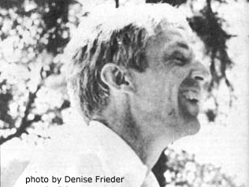

Hartmut von Hentig-a wiry, energetic man with a thin, craggy face-doesn't really look old enough to have gone to school during the Nazi rise to power in Germany . . . but he did and, possibly because of that experience, he's become both a philosopher and a professor of education. Von Hentig is now the driving force behind a new German university dedicated to developing more humane schools and preparing more human teachers.
LIFESTYLE!'s Tom Carr got to know von Hentig in Cuernavaca, Mexico, last February when both were attending (von Hentig was one of the organizers) the World Law Fund's Education for a Global Community of Man seminar at CIDOC (Ivan Illich's meeting place for people who'd like to see society's present institutions-especially its schools-revamped or replaced).
A ttending the February seminar were Europeans Latin Americans who discussed the roles that education might take in recreating society on more peaceful and equitable terms . . . and the meeting soon became a debate on the relative merits of working for change within the system versus dropping out to start something new. In those discussions, von Hentig-who has been a consistent critic of Illich's proposals to deschool society-was an ardent exponent of rationality and continuity.
The following interview with von Hentig (who's been referred to as Germany's John Holt) was conducted by Tom Carr in the kitchen of von Hentig's small rented bungalow in Cuernavaca.
LIFESTYLE: Under the leadership of Ivan Illich, CIDOC has become a gathering place for people who feel that it's impossible for schools to provide the skills and abilities necessary to rebuild our damaged civilization. You take issue with Illich and his cohorts on this . . . what do you feel is the place of formal education in alleviating society's ills?
VON HENTIG: In my discussions with Illich I insist that he must not always connect schools with industrialization and production, with making people fit into the various economic pigeonholes society has constructed for them in order to maintain itself. Schools weren't originally intended to be instruments of oppression and have been twisted to perform these functions. One reason for which they were first set up was to satisfy the body politic's requirement for enlightened men who know how the system works, men who are capable of using the system to accomplish worthwhile goals and capable of changing the ground rules if such goals become impossible to achieve.
Unenlightened people, who have no respect for the customs and laws we've set up because they don't understand them or don't realize how they can benefit without putting them to evil use, can destroy society in many ways . . . put fire to it, make silly revolutions at times when they're not necessary or fail to make them when they're needed . . . or make the big money and oppress people with all sorts of greedy or dangerous inventions and productions.
The totally ignorant man cannot be blamed for these things . . . so it's the duty of education to eliminate the totally ignorant man and replace him with a man who can-and will, by virtue of his enlightenment-take responsibility for his society.
This can be called political training, but I don't like the word "training". It's dangerous because it can be interpreted in so many perverted ways. Rather, I would say that the highest purpose of schools should be to enable children to realize that whatever they do has a political influence on others, is politically meaningful. This should be done very early in the child's life, because it begins to affect him very early. He should know that there are many ways to organize for the commonweal . . . he should understand the alternatives and why his society has a particular one instead of some other. The emphasis should always be, however, on finding all the alternatives, even those that are directly opposed to the one he presently lives.
Children should experience as much as possible the real problems that face us, and get exercise in using all the means by which solutions to them might be achieved. Because we all depend upon one another, society is unsafe if they don't.
LIFESTYLE: Some people claim that receiving education in a school atmosphere makes a person very narrow in scope and lacking in imagination . . . the ways of doing things that teachers tell him about in class might be all he could ever come up with. If these claims are true, then aren't schools doing exactly the opposite of what you're advocating?
VON HENTIG: But it's the people who say this that have no imagination, because they can't free their minds of the image of the big brick school building standing there with its teachers inside pointing to their books and saying, "Read paragraphs one through four and you'll know all the alternatives, children." That's not the way to experience politics, and I must emphasize the word "experience".
The day before yesterday I walked through Cuernavaca with Illich. We visited a small school and in it were children who were visibly undernourished, tiny little wisp-like creatures . . . three of them fitted easily onto a bench meant for two. I couldn't rid myself of the question of what I would do if I were a teacher there. I'd leave the oldest in charge of the class and tell them, "Now you all stay here and go on with this business that you're doing while I take these five hungriest ones out."
I couldn't buy these children food every day, but we could find ways to get food, whether we had to steal it or work for it or forage it somewhere . . . whatever we had to do. If we were successful, fine. If the authorities returned us to school because it's a scandal for a teacher to behave in that fashion-even if the whole thing were a failure-it would still have been a political experience that might help the kids to look out a little better for themselves in the future.
If we start doing things like this there may soon be a pretty big turnover of teachers . . . but it's a crime to stand there telling those children how many tons of wheat Australia produces while they sit there starving.
The teacher's primary task should be political education . . . helping people learn to make decisions in the face of other people's power-or their own non-power-on the basis of incomplete information and under pressure of time. In other words, children must be prepared to function effectively under the conditions they're going to find in the real world.
I should also say that politics is a mobile or flexible way of regulating common affairs, as opposed to stable ways such as fixed and immutable laws or morals or the regulations printed up and hung in the corridor telling who's to do the sweeping on Wednesdays and who on Fridays. Political decisions are specifically concerned with changes, with the flow of events that we're constantly involved in, and the ways in which these choices are made must be very informal and flexible so that much change can be facilitated as readily as possible.
That's what schools are really for, to teach people how to make political decisions. To leave the children in the streets or with their mothers who have no knowledge of anything but what they already suffer from is worse than useless. How can these children learn to respond to their problems in a way that will make any real changes in their situations? Children brought up in awful conditions by unenlightened people will more than likely become unenlightened people themselves.
Illich speaks of establishing networks of meeting places for people to get together and educate themselves. I don't believe, however, that the things he proposes will result in the necessary political education. He says that next August there'll be a meeting at CIDOC of all the people who've opened academic coffeehouses and set up libraries and other "networks" of that kind . . . if he thinks these things are an answer to the huge established schools and powerful bureaucracies, then gracious, he must be naive! The coffeehouse doesn't offer anybody a job. It only offers him a place where he can chat and-if it's as expensive as CIDOC-a cup of coffee that he might not be able to pay for. Only the wrong people, only the members of the leisure class who're a little ashamed of their wealth, will go there in shabby clothes and long beards . . . trying to imitate some existentialist bard.
LIFESTYLE: And you feel that by working from within, the system can be modified to provide political education through existing channels?
VON HENTIG: I would work within the system, yes-although I wouldn't recommend it to everyone-because I'm in a privileged position in a German university with an immense degree of autonomy. My position gives me an opportunity to help people, and that's reason enough for me to stay. Outside the system I wouldn't enjoy this leverage . . . I'd be a nincompoop, a nobody.
You know, when the German universities failed in 1933 it wasn't because they were state-paid and state-run and therefore had no choice but to do as the state told them, but because the professors didn't avail themselves of the freedoms they had. They didn't assert themselves. There are many opportunities to stand up to the authorities built into the system itself-loopholes, if you will-if only people will take advantage of them. Push the system as far as you can until they kick you out of the place you're in, then go to another place. Because you're a qualified person and have the skills and credentials to get another position, you can do that. Only after you've really exhausted all your freedoms and have no realistic hope left to move the system from within should you leave, leave in protest . . . and perhaps this is what many teachers and professors should do. Perhaps many have reached this point.
LIFESTYLE: Often, though, people who choose to play gadfly and push from the inside lose their qualified status. If they become too insistent in their demands they're suddenly blackballed and must choose between buckling under or leaving the system at once, perhaps with responsibility to a family and no plans for the future.
VON HENTIG: I know this happens, and I'd hesitate to tell every teacher-especially those with families to support-to agitate from within until the system's forced to strike back in a way that might destroy him . . . I couldn't ask martyrdom of anyone. But I do ask every teacher, in the system or not-every person engaged in helping others to become self-determined, to put up resistance to the forces that impinge upon their lives and to try to change society where it's wrong-to examine how his own life stands in relation to his teaching. There's no use pointing to the nice places in literature and history where others have lived courageously if the teacher doesn't try to do so himself.
LIFESTYLE: But is it really practical to stay within the system? The comment has been made that the evils of tools (or institutions) have two sources: the attitudes of the people using them and the nature of the tools themselves. It's a waste of resources for a person with the right attitudes, talents and drives to tie himself to an inadequate or unfeasible tool.
VON HENTIG: I agree that both a person's tools and his motives must be of the right kind. No matter how effective my tool, I won't accomplish any positive changes with it if I have the wrong attitude . . . if I use the instrument only to become rich or famous or to take trips to Cuernavaca all the time, for instance. By the same token, if my tool's unfeasible I must certainly give it up, for no matter how good a person I am I won't achieve anything worthwhile with an implement I haven't chosen wisely.
At the present time, however, I feel there's more sense-at least in Europe-in making my changes at the place where I am. All jobs and professions have a political bearing and if-from my position as a teacher of teachers-I can open a few people's minds to see that, then I'm accomplishing something and my instrument is working.
But it's possible that my tool-the schools-might prove in the end to be unworkable. Children are damaged in the public schools, though we can't tell exactly how much . . . I've never seen any significant numbers of children who haven't grown up in the school system, so I have no real measuring stick by which to judge the damage. The world has grown pretty bad and perhaps it's all the schools' fault, I don't know.
Everyone's a bit neurotic from having undergone foolish treatment in the name of education. I can certainly see where I've been damaged by society's preoccupation with production and order and law (though not all of that's wrong). Maybe humanity has been schooled enough already and we should abandon the institution as Illich claims . . . but I'm not ready to do that yet. To abandon schools completely now would both throw away their potential for becoming better-which I believe is great-and open the door to chaos by prematurely divesting us of our most basic institutions. At this point I don't think society could survive the shock . . . and I believe it's important that society continue to function.
I saw a film once- WILD CHILD by Truffaut-about a child found in the wilderness who'd never had any contact at all with human community. It came out so clearly in that movie what a price we have to pay for our civilization . . . yet on the other hand how confined, how dim, how lonely and how fearful life is without it. The film ends with a doctor noting that the child had shed his first tears and was therefore becoming civilized.
"Children are damaged in the public schools, though we can't tell exactly how much . . have no real measuring stick by which to judge the damage."
There's much in society to cause tears and suffering, but wemust face our faults and mistakes in human fashion if we hope to correct them and enjoy the good things that civilization can bring. Humanity is a response to what we've done to ourselves while struggling to live up to our potential . . . animals don't need humanity, they just need instincts and Darwin.
I'm often asked what are my guiding values. I operate on a set of negative ethics that say "no" to things which are becoming outrageously or conspicuously bad and which are hurting people. The trauma of Hitler's National Socialism influence everything I do . . . my overriding concern is to avoid the next 1933 to 1945. I never want to be as impotent as that again or see others-even people with the strongest of minds, character and bodies-impotent, also . . . unable to do anything. I also want to prevent society as a whole from losing its head again as Germany did then. It's not a Hitler we're to fear as much a people who're willing to put a man like that in charge of their nation.
These aren't simple things to avoid. The next Hitler won't have a little black mustache or strut around in a brown uniform. Who can say what kind of man will be able to capture such a following in the future . . . he may look like Billy Graham, who knows? One way of trying to avoid such catastrophes is to set up institutions that people have agreed in advance to honor such as schools or governments. There's no safeguard or guarantee that they'll be honored forever, but their existence gives you a time lag, a margin of safety like the twenty seconds or so one had during World War II after the air raid siren sounded in which to think before the bombs began to explode. This is what institutions and their procedures provide, a time lag due during which to think.
But to make the best use of their institutions people must learn to assert themselves and to use what powers they have to their fullest. Every day we must say to ourselves, "What powers do I have and what can I do with them?" We must stop trying to avoid responsibilities and decisions. I sometimes think of a line written by Bertolt Brecht, "I have not been able to oust the men in power, but as long as I have lived they have not slept as well."
That's how it is for me . . . I have a task that confronts me every day with something positive I can do. "Doing" for me consists not in saving the world at one fell swoop but of staving off a little bit of evil each day. The evils come back again and again, but my associates and I are able to do one small thing, to take in a few students and teachers that we can help and protect. That's a good thing to do, isn't it, to help and protect somebody?
LIFESTYLE: What do you think of young people themselves leaving the existing school systems, dropping out and searching for something else on their own?
VON HENTIG: I fear that many of them don't have the maturity or the experience to be successful in finding something different on their own. This has been encouraged by many well-meaning radicals, but I think that it's an undutiful shirking of responsibility. I've never understood how these people can expect children to know better than adults how to escape the clutches of the custodial institutions-called schools-in which they've been imprisoned.
The children who've revolted . . . what have they said that hasn't been said before by critical grownups? They've just reverbalized it and I'm really doubtful whether this is helping them to become free. To say, "Now children, go ahead out and make your own colony," is nothing but another way in which adults manipulate young people, because to leave them entirely alone to "do their own thing" is really forcing them to recopy us in all our bungling ways. What else can they do? They can't copy elephants, and without a chance to carefully examine and test what they're doing they'll just use grownups as models because they know of no other possibility.
This strikes me as taking Rousseau's natural education-in which the child isn't "taught", but is given every opportunity to learn on his own as his physical, sensual, moral and intellectual development progresses-to its extreme. Rousseau said that no one who goes about education in this manner should fool himself into believing he's being non-authoritarian . . . because, in fact, this is the most authoritarian type of education. The grownup-whether teacher, parent, advisor or hero to the child-has complete control because the youngster doesn't realize how even his will is being directed by the subtle way in which the adult chooses what the child is exposed to. And what children left wholly to their own devices are exposed to is the entire world and all its faults and vices, with no tempering voice to help them discriminate the good from the bad.
Instead of this silence, children need challenge and resistance from adults... and they need, above all, respect. In A.S. Neill's SUMMERHILL one great, great thing was made clear: Neill never lies to a child. When children ask questions, he tells them why-as best he can-things are the way they are. Then the child has a frame of reference from which to say no and try to escape or change things.
LIFESTYLE: What about free schools, then, in which grownups do take this responsibility but in atmospheres far different from those of custodial institutions, as you call the public schools?
VON HENTIG: Free schools are just again schools and have their own hidden curriculum. They can be equally as damaging as the system we already have, because they're mostly parochial or sectarian institutions and can be very hidden away, very concealed from view. There's no guarantee that what's going on in them in the long run will be any less foolish than what's now being done in public schools . . . and the people have no control over free schools. What must be emphasized more than anything else, I think, is public control. The community must be interested, constantly discussing what's happening in their schools and constantly interfering. The job can't be left to some functionary put into bureaucratic authority and told to see that regulations made twenty years ago are still followed to the letter. Teachers need help, and help should take the form of cooperation and criticism from the public.
LIFESTYLE: Often a free school is set up on a commune, so you have a community with a school operating as an integral part of it . . .
VON HENTIG: There's the public control! That's exactly the kind of thing I mean, and if this happens, it's good. The commune, though, must not be made up of people all of one mind so that no criticism or variety of viewpoints is ever brought in.
If education becomes the province of private, parochial institutions its usefulness will be lost, because public control will be lost. Free schools can be a very good tool, under the proper conditions, for scaring public schools into doing their job, being really public and open to popular criticism.
LIFESTYLE: Robert Mendelsohn, former director of Operation Headstart's medical program for preschool children from poor families, offers the proposition that it's not possible for the radical movements to accomplish anything like that, because free schools, free health clinics and the like are allowed to exist only because they serve the purposes of the system . . . they reach at best 5% of the people, but give a widespread impression that something important's being done. As soon as the radical operations become really effective, however, they're squelched.
VON HENTIG: That could very well be the case . . . it was certainly true for conscientious objectors in Germany. For many, many years they were way below 1% of the population-totally insignificant-then when the membership suddenly began to climb the government took notice of them and tried to stop the movement.
This didn't, however, make the situation worse for our CO's. Rather, it ended up helping them because their plight was publicized, and under pressure from the press and public opinion the government had to allow these boys to find meaningful alternatives to the military. I don't know how this phenomenon might operate in the United States, though.
LIFESTYLE: So you think it's possible for the free schools to sustain their success even after the movement begins to get big, if they can gain the right leverage and exposure to the public?
VON HENTIG: I'm not so much concerned with their success, per se, but with how they effect the rest of society, which will have a lot to do with whether they can manage to solve the two major problems facing them. First, children must be happier while in school and must have all the freedom that they need to grow up and experiment and to find out who they are and how wicked and how nice the world is. Second, children must be provided with a chance to survive in a society that has not yet changed while all this has been going on. If kids are very free and protected, then grow up and enter a society which makes all kinds of harsh and inhuman demands on them . . . well, this isolated childhood will deprive them of the ability to cope with the bad parts of society, which they'll have to face sooner or later.
LIFESTYLE: NEW SCHOOLS EXCHANGE says the free school movement is going downhill in the United States because many of the most sensitive and most intelligent teachers, who dropped out of the regular schools, are in turn dropping out of the alternative schools. NSE claims that people with that m uch capability feel confined spending more than, say, two or three years working with little children.
VON HENTIG: That's a problem of the teaching profession in general. In Germany we speak of the "professional diseases" that teachers succumb to. Living with children all the time and having no contact with grownups makes them into caricatures of teachers, people who always know better, who always look down on others, who're always benign but superior and who never have conflicts (except the ones that they hide because they're terrible).
I'd stress three things that teachers must do in order to avoid contracting these dreaded diseases. First, they should always know what society is and what people outside of schools actually do with their lives. In their training, teachers get a certain amount of information about the subject they'll be teaching and a certain amount about the theories of child development and so forth, but they don't learn a bit about life! They ought to be forced, really, to go into industry, social work, politics, community administration-to have experience with real life-or else they can't function as teachers. They should be continually involved with their society and should never become isolated in their role, hiding from the "real world". If they aren't able to involve themselves in other things while they're teaching, they should take frequent sabbaticals . . . not to libraries or universities, but away from the schools altogether.
Second, they should form political groups, and the issues they discuss should be the controversial ones of their profession and their society. Teachers today are almost all members of unions, which are good only for raising salaries, gaining security and planning parties.
And third, teachers should be able to practice what they preach. They must be strong, self-determined people and be able to give account for their actions in a reasonable way. The things that they moralize about should be the reality of their lives, as much as possible. But teachers often aren't this way . . . instead they take the oracles from science and hand them down unexamined to the children, they take all the orders from the authorities and say, "This is what we have to do." People like that cannot produce free citizens, free personalities. Educators must accept responsibility for their own lives and how they conduct themselves before they can help others to do the same.
I'm convinced that in order for teachers to be able to do these things, there must be a teacher scarcity. Only if you have a dearth of teachers will it be necessary to call in people from outside the "family" who haven't had to crawl through all the tunnels that have forced so many teachers to curve their backs. We're fortunate in Germany to have a teacher shortage, and it's changed our scene for the better. Now the good person who wants to teach has a little bit of leverage and the government can't force out everybody who doesn't think exactly as he's told.
Of course, this has two sides . . . with a shortage, the bad teachers must be kept because there's no one to take their place. But they're kept anyway. I haven't seen any bad teachers being kicked out.
LIFESTYLE: Many people don't share your desire to remain within the system. Some have dropped out to form communes and intentional communities in an attempt to change their lives in a personal way that they felt wasn't possible in "straight society". What do you think of this?
VON HENTIG: As I say, I don't advise everyone to stay in the system. In many respects the commune movement represents changes that are positive and desperately needed. We must get away from the big, abstract units in which we're caught-nations, for instance, or even large cities-because nobody understands how they function or how he might be able to say "I'm responsible for this" or " We're in charge of that." The "I" and the "we" are getting lost because no one can grasp his role within these gigantic monsters.within these gigantic monsters.
John Holt quoted someone-Henry Ford, I think-who said there's nothing wrong with bigness itself . . . Holt maintains that there is something wrong, and he's absolutely correct. In the face of bigness people feel small, confused and impotent . . . objects of some unfathomable machinery. We're in a worse state now than some primitive tribes were under the magic forces of their gods because we really don't know machinery is operated.
One can only be the master of his tools if he's made himself and is thoroughly familiar with their every aspect. Anything I use but don't know the workings of takes away from my freedom, takes away even from my opportunity to accept or reject it . . . if I don't know what it does and why, I can't throw it away because I might be discarding something very valuable. This is one of the reasons we should return to a less complex life.
Paul Goodman was very close to the answer, I think when he said that we must engage in "simplification", although he never really spelled out what that is. He said it's a task for everybody to think about and to accomplish for himself. Simplification involves a reversal of our thinking . . not trying to perfect everything by supplementing it-by making it "bigger and better"-but by first asking, "How can I make this simpler?" All things are too complicated already.
I think that Illich has made a good start by saying that we must break down our institutional and industrial structures to manageable to levels. He wants to reinstate the individual, human element in our activities, and would say something like, "it would be better for us to decentralize . . . everyone will have more work-and more meaningful work-if we do away with automated machines in sprawling, impersonal factories and replace them with simpler devices people can operate proud with their own hands."
It's become a matter of practical wisdom to make our functional living and working units much smaller, simpler and more manageable than they are . . . yet larger than family-sized groups, which are only the atomic cells or building blocks social organization and can't provide any of the opportunity and benefits to be found in a society. Something in between is necessary, so it it seems that communes of some sort are a good of way of living
LIFESTYLE. The communes are a desirable reorganizational move, then, if the attitude that motivates them is right?
VON HENTIG: A massive movement in that direction would be good, yes. I think that the future will probably be organized more along the lines of groups of 200 to 2,000, connect together to form federations of some kind.
These small groups won't become autarkic-that is, self-suffcient and cut off from their fellows-in economic terms, at, certainly not in psychological terms. Groups will depend upon one another and will want to know what others are doing and how they're meeting difficulties. Once we realize how limited the world is and how much everything in it depends on ever thing else, we can't pretend this knowledge doesn't exist and try to live in isolation.
I think that to realize its full potential the movement will have to free itself from the romantic, anti-political notion that I find in it now. Communes must be used as a means of reordering society, not of getting away from it. People who run to a commune in order to escape are only fooling themselves . . . nobody can possibly "drop out" of society. They may find a more marginal place, but they'll still depend on the outside world in some way. And I can't believe that anyone would want to drop out if he's really examined what he's doing. No human mind-no sensible and sensitive mind-could bear the idea of existing in apathetic seclusion with 200 people, knowing that 2 billion people are outside suffering. Dropping out can only be a selfish, temporary solution to a continuing problem involving all mankind.
The Nazis began with this same anti-intellectual, anti-technological, isolationist attitude-they were for family and for nature, for "blood and soil" as their phrase went-and they carried it to a fearful extreme. I don't want to see this repeated. You can't rely on blind flight back to nature and simplicity alone to save you from the pressure of big society and many people living under evil conditions. The valley into which you escape doesn't really take this off your mind, nor does it protect you from it.
LIFESTYLE: An attempt has begun among some alternative communities to establish the kind of cooperation and interdependency of which you speak, a communications and trade network in which the groups work together to satisfy their collective needs. What must be done to make this effort successful?
". . . nobody can possibly "drop out" of society. They may find a more marginal place, but they'll still depend on the outside world in some way."
VON HENTIG: If they're to establish effective networks they must develop a strong feeling of commonality, especially since they're so marginal and tenuous in their existence at present. Merely disliking the existing civilization isn't enough of a common ground to close a network . . . they must know each other's interests, strengths and weaknesses well enough to avoid bad alliances. It may be more desirable, for example, to be connected with a church parish in Bavaria than with some more similar- looking group close at hand. They shouldn't hesitate to look beyond themselves for useful resources, either. Museums, libraries, universities, churches and many other places stuck right in the craw of society might be more valuable in some respects than anything that could be experienced on the communes.
Perhaps the most important thing is that they know very specifically for what reason their network is being established. Is it simply to share a feeling of brotherhood, or is it to help themselves economically, or perhaps to enrich their lives in general? . . . both networks and individual communes need a recognizable purpose for their existence. I stayed for a while with a community of anthropositivists in northern Scotland which was centered around the care of emotionally disturbed children. They took in as many children as they sensibly could and let them, live without being pushed around or put under pressure. Those people had a good commune because they had a task, the value of which didn't have to be proven to themselves or anybody else.
LIFESTYLE: One specific purpose proposed for the network is the achievement of autonomy from establishment politics and economics . . . from the capitalist system, essentially.
VON HENTIG: But the irony is that this couldn't be attempted under anything but a democratic capitalist system, in which the only real pressure is an economic one. Perhaps this is another example of Mendelsohn's "5%" theory . . . large capitalist systems usually don't harass small, marginal enterprises which pose no serious threat to the major enterprises in power. These networks could never be established in a rigid society strictly controlled by a government that demands a very specific social as well as economic organization of all its subjects. It seems, when I put it this way, that communes are seeking a third way, in between socialism and capitalism. Is that correct?
LIFESTYLE: The idea seems to be to set up a non-rigid situation in which everyone can meet his needs through barter rather than money exchange . . . a situation which can operate independently of the governments of the area in which the network exists.
VON HENTIG: I think that trying to do away with money is attacking the wrong aspect of the problem. Money is a very convenient thing to have around. It facilitates exchange so you don't have to have your butter all churned and fresh at the exact moment the other fellow has his rabbits killed. It may not always be possible for these to coincide, so you decide that in the meantime you'll give each other a token of what's owed, and whatever the token is you call "money".
The bad part, however, is that you can transform money into capital-meaning investment-of which you need a lot to build large industries. Capital is collected from lots of people . . . money is sold to get more money on a very large scale.
If I understand correctly, the large scale is what the communes don't want. They desire to be smaller, closer units in all respects, including economics. They don't want to produce any more than they really need and they don't want to expand, to grow for the mere sake of growing. These minimized needs they would meet through barter-or cash purchase, as well, I'd maintain-with other groups. I think that's a good idea.
It's illusionary, however, to think of this network as completely free from the established society. It will use the system's transportation, for example . . . you can't construct a vast complex of roads, railroads or airports on your own because of the expense, and a return to the conditions that existed before these methods of transportation came into being would be a silly sacrifice of efficiency and convenience. Not all modern advances are damaging, despite what some people would like to claim . . . they must be, used with discretion, however.
But even if their separation isn't complete, it's still a sound step in the right direction. Until a new order has been established which is neither rigid, planned centralism nor laissez-faire, laissez-alles competition, people should try to get as much away as they can from the Woolworths and the supermarkets and the department stores, which are certai nly destructive in many ways . . . I don't have to expand on that!
LIFESTYLE: But if this alternative exchange network is using the facilities of the system, isn't it also dependent on the system, and in a position to be influenced or even destroyed should it be perceived as a threat?
VON HENTIG: We're all in it anyway-we're constantly in a position to be influenced or destroyed-and things can't turn out any worse than they will if nobody tries anything. I say go ahead and try!
|
 |
|
|